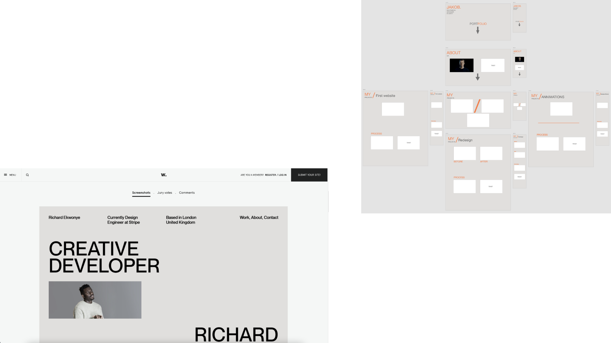

proces / inspiration

PORTFOLIO / EKSAMEN
I denne opgave skal jeg fremvise min portfolio eksamen samt tidligere projekter som jeg har lavet på 1. semester.
FORARBEJDET TIL EKSAMEN
Op til udarbejdelsen til denne portfolio site læste jeg eksamensopgaven godt igennem, så jeg kunne danne mig et overblik over hvad der skulle med og hvad jeg syntes der var vigtigt for at give et billede af hvad jeg har lært i løbet af 1. semester. Jeg gennemgik først de forskellige opgaver og projekter vi har været igennem og samlede nogen af dem i billeder for at kunne vise lidt af forløbet til hvert enkelt tema. Derudover så skulle jeg finde et design som jeg vil synes så pænt ud, men også som var muligt ud fra de kompetencer jeg har tillært mig. Det gjorde jeg blandet andet ved se enkelte tidligere portfolio screendumps som var vedhæftet i eksamensdokumentet, men også via awwwards hjemmeside som viser nogle prisvindende designs, både på portfolio, men også i andre kategorier. På den måde fik jeg inspiration til mit eget. Jeg lavede derefter en prototype XD, som samtidig fungerede som layoutdiagram – jeg er komme tæt på det layout jeg gerne ville, men måtte i nogen tilfælde improvisere og fordi jeg fik nye tanker undervejs.
MIN OPLEVELSE
I forhold til udførelsen af portfolio sitet prøvede jeg at danne mig et overblik, så når jeg sad og kodet havde en klar idé om hvordan ting skulle stå og hvordan det skulle se ud, dog kunne sitet være mere overskueligt i CSS’en da jeg var for ivrig omkring at komme i gang, så der er nogle klasser som er tilknyttet en enkelt side, men jeg har så efterfølgende brugt den samme klasse vtil andre sider, og hvis dette havde været i en gruppe situation eller arbejdssituation ville det være svært for en udover mig at danne sig et overblik over hvad hørte til hvad, hvilket selvfølgelig også gav mig udfordringer engang imellem. Dette vil jeg kunne løse ved at lave flere variabler i CSS, ligesom jeg havde gjort med farverne, dette vil jeg have bedre styr på det til næste projekt, hvor kodning er involveret.